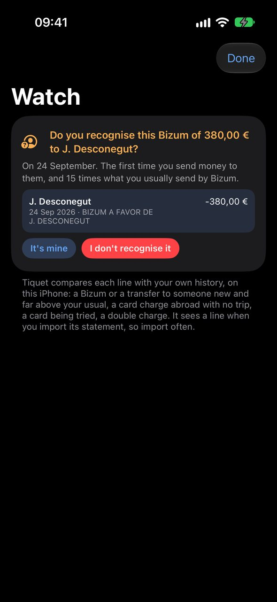
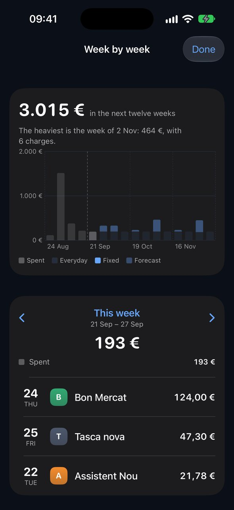
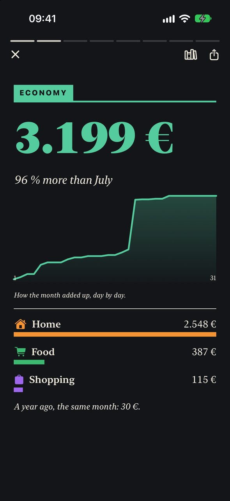
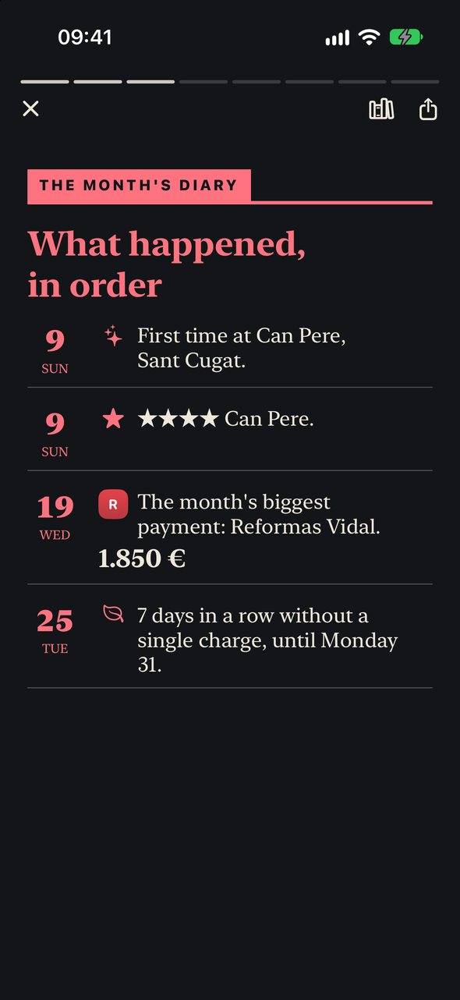
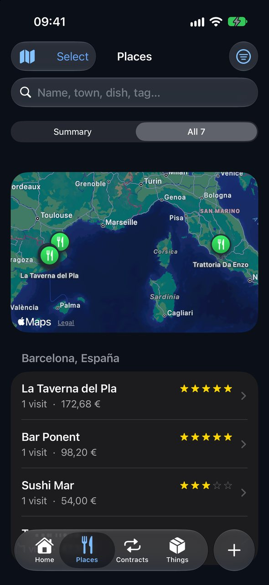
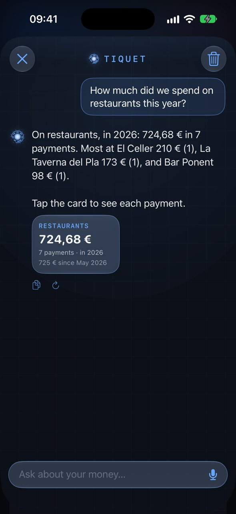

Everything it sees, one screen at a time
Anything strange?
A Bizum to someone new and far above your usual, a transfer to an account never seen, a charge abroad with no trip, a card being tried, a double charge. Tiquet asks if you recognise it, and if not, says what to do now. Worked out on your iPhone; it contacts no one.

What are we signed up to?
Every policy, subscription and bill as a card: number, price, period, renewal, last day to cancel, the phone to call, and the PDF attached.

The next twelve months, one screen
A bar per month, solid for fixed premiums and lighter for the bills that depend on consumption, green for what this month has already charged. Below, each charge on its day: the amount, and what it rests on when it is a forecast.

Sixteen bars, nothing to zoom
Four weeks behind and twelve ahead. What was spent, then what is coming: your everyday pace, the fixed charges and the bills that go by consumption. The heaviest week is named on top, because that is the one that hurts.

Your household's own newspaper
On the 3rd, last month comes out as an issue: a cover, the money drawn day by day, a diary of what happened, where you ate and what you loved, the map, and the household's horoscope: what next month holds, read in your contracts, not in the stars.

Written on the device from your own receipts, statements and ratings
Share it as a PDF, with or without figures. Every past issue on the shelf.

Places you ate
Your regulars on a shelf, your trips found by themselves, home's towns at a glance; then each place with its own stars and notes, all its visits, what it has cost and the dishes worth coming back for. Search a name the bank knows and it becomes a place.

Ask in your own words
“How much on groceries this month?” “Which of our restaurants are near me?” “Where did I love the hot chocolate?” — and then “And in Sabadell?”. Answered on the device as it writes, from your data, by voice if you like. “How much at…?” gets the exact figure, and a tap shows each payment.
